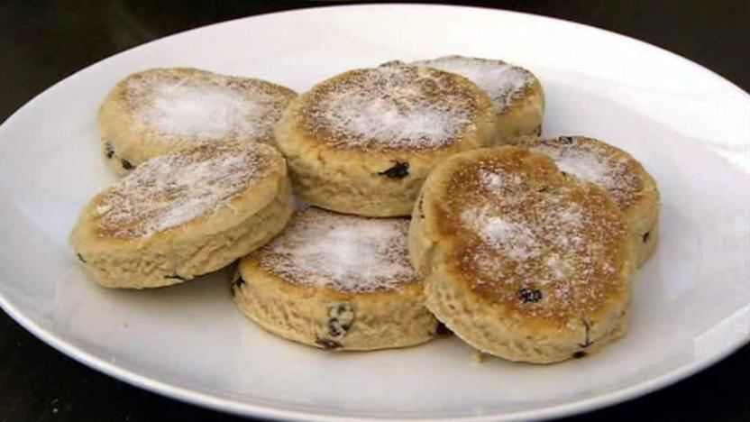

1 mug of brown sugar
1 mug of sultanas
1 mug mixed fruit
3oz butter
4oz cherries
1tsp mixed spice
1 mug of cold tea
2 mugs of self raising flour
Add all the ingredients together in a saucepan.
Boil for 5 minutes, then let the mixture cool.
Beat 2 eggs and add to the mixture.
Add 2 mugs of sifted self raising flour.
Bake for 2 hours at 150'.
* * * * * * * * * * * * * * * * * * *
1lb plain flour
1tsp baking powder
3/4lb butter
1/4lb currants
A dash of milk
Mix all the ingredients together.
Roll out and cut into round shapes.
Bake on a griddle, until slightly browned.
Serve, sprinkled with sugar.
* * * * * * * * * * * * * * * * * * *
1 1/2oz butter
3/4ozlb plain flour
3 tsp baking powder
1/4 tsp salt
Pepper to taste
3oz Caerphilli cheese
2 oz Parmesan cheese
1/2 pint of milk
Sife the four, salt and abking powder together, then rub in the butter.
Grate cheese finely, add to the flour with a pinch of salt.
Mix well, and add enough milk to make the dough soft.
Roll out half an inch thick, cut out into rounds, and place on a baking sheet.
Bake in a hot oven for 15 to 20 minutes.
Serve hot, with butter.
* * * * * * * * * * * * * * * * * * *